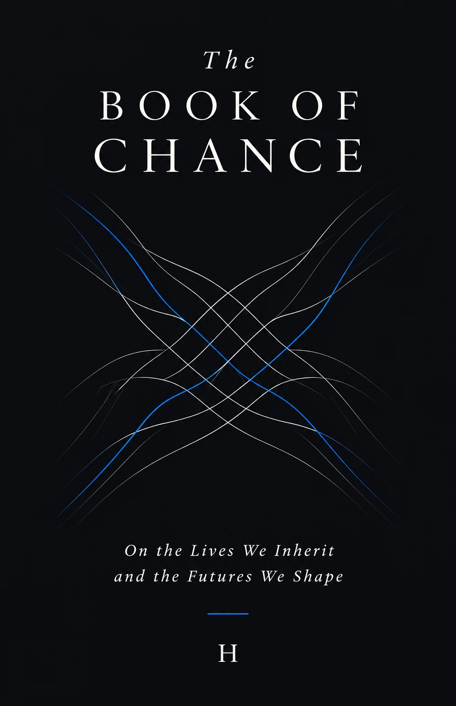
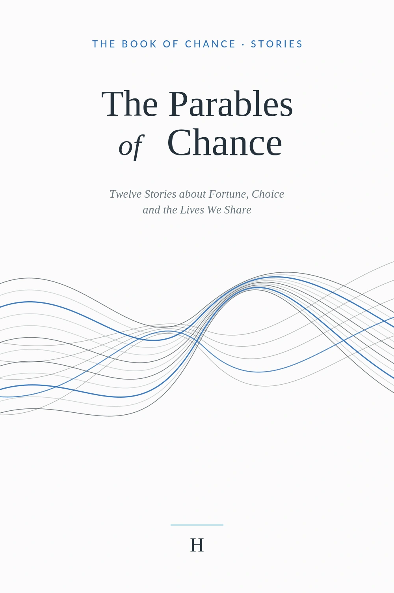
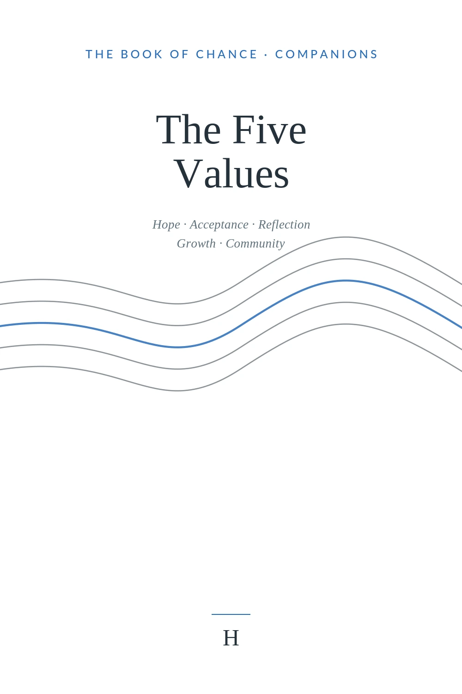
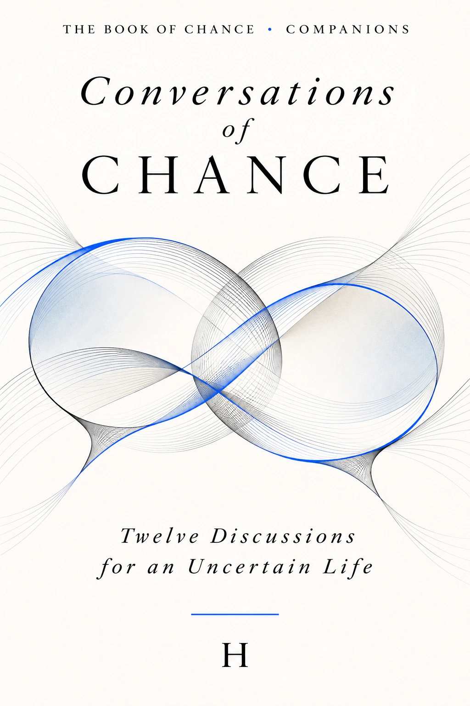
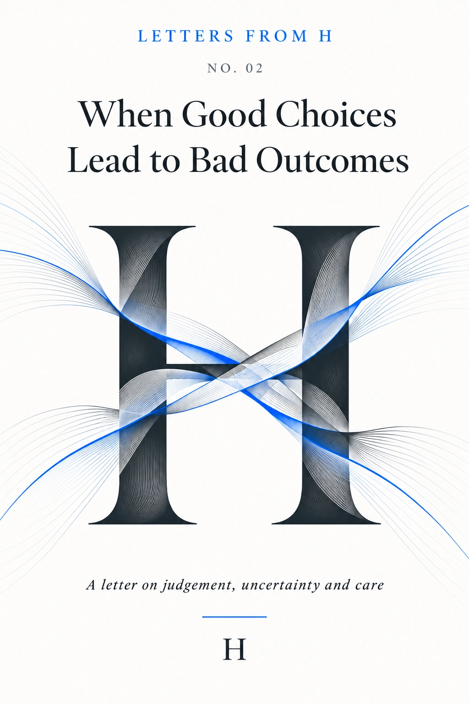
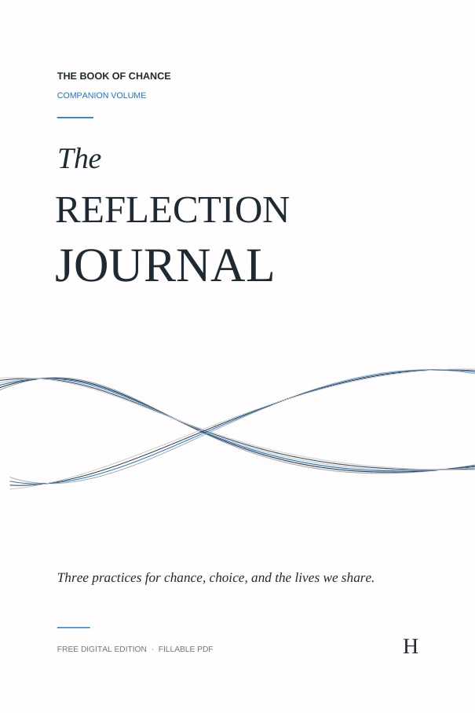
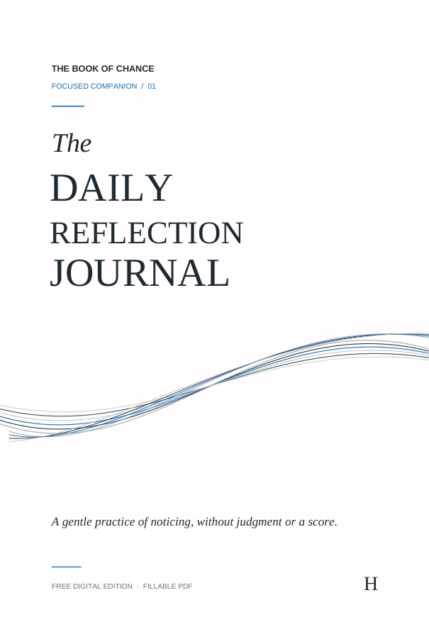

Light Edition
A page of possibility
White, charcoal and blue. The complete illustrated text.
Books, reflections and future learning resources exploring chance, choice and the ways our lives shape one another.
Everything currently available is free to read or download, without an account. The collection can grow without turning the site into a storefront.
Follow a question through the library, or open a book and read page by page—without an account.
On the Lives We Inherit and the Futures We Shape
Twelve readings, original parables and six illustrated interpretations of uncertainty, agency, dignity and shared possibility. A standalone work of reflective philosophy by H.
White, charcoal and blue. The complete illustrated text.

Charcoal, ivory and blue. Exactly the same words and illustrations.
Two covers, one text. Both versions have exactly the same readings, diagrams and illustrations.
Or read the complete book onlineNine books and essays, from a short introduction to original fiction. Find something by its title, question or theme.
Showing all 9 publications
Six works in different forms, including a short place to start.

A welcoming introduction to chance, meaningful choice, five values and the Fellowship in development.
Revised editorial candidate
Twelve readings, original parables and six illustrated interpretations of uncertainty, agency, dignity and shared possibility. A standalone work of reflective philosophy by H.
Foundational work
Twelve Stories about Fortune, Choice and the Lives We Share
Editorial candidate
Hope · Acceptance · Reflection · Growth · Community
Editorial candidate
On Small Openings and the Conditions We Create
Editorial candidate
Twelve Discussions for an Uncertain Life
Editorial candidateThree independent philosophical essays. Visit the Letters archive →

An essay about the strangers who make our lives possible, and the responsibility we carry toward people who may never know our names.
Editorial candidate
A letter about making careful decisions when outcomes are uncertain, and remaining accountable when things go wrong.
Editorial candidate
A letter on the duties we have to strangers, the promises we keep to loved ones, and how to help without turning care into an unlimited demand.
Editorial candidateNo matching publications. Try a different title or theme, or clear the search.
All publications can be read without an account. The Beginner’s Guide and other companion titles and Letters remain editorial candidates, with final review and accessibility checks outstanding.
Four free fillable PDFs across three complementary journals. Begin with the complete companion, or choose a focused practice. None requires membership or a daily commitment.

48 pages combining daily reflection, acts of possibility, weekly review, a Turning of Chance and open writing space.
Same interior as the Dark Edition. Fillable PDF · 6 × 9 in.
Download Light Edition · PDF ↓
The same 48-page journal in a charcoal cover, matching the two-edition idea of The Book of Chance.
Same interior as the Light Edition. Fillable PDF · 6 × 9 in.
Download Dark Edition · PDF ↓
40 pages for noticing circumstance and choice, with fourteen full entries, two weekly reviews and open pages. No streaks, scores or requirement to write every day.
Download Daily Journal · PDF ↓
40 pages for thoughtful acts of support: twelve guided opportunities, three follow-up reviews and open pages. Consent and personal boundaries are built in.
Download Possibility Journal · PDF ↓Individual fillable PDF sheets for a single reflection. Edit them in a PDF reader or print them to complete by hand; all are free.
A short daily or situational practice. Editable fields and a print-friendly layout.
Download PDF worksheet 02 · ACTION / FILLABLE PDFConsider one voluntary, respectful act. Editable fields and a print-friendly layout.
Download PDF worksheet 03 · WEEKLY / FILLABLE PDFA thoughtful look across your week. Editable fields and a print-friendly layout.
Download PDF worksheetPrefer to write on screen? The interactive reflection workspace works without an account and doesn't submit your writing.
Open the reflection workspaceEPUB is best for adjustable text and dedicated ebook readers. PDF preserves the fixed illustrated page layout. The PDFs currently supplied are reader proofs, pending final digital accessibility and production checks.
Foundational writings remain accessible without membership, payment or registration. Additional resources may have their own formats and availability when they are ready.